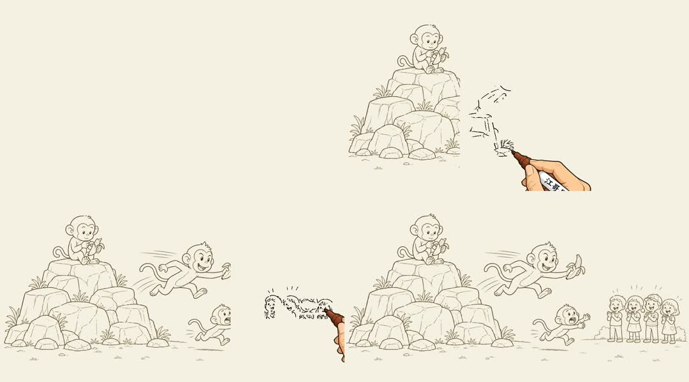

{kind=link}
故事叙事 · 区域事件
猴子抢香蕉
三段字幕分别对应左侧场景、中间冲突主体和右侧观众反应，适合观察最典型的叙事顺序控制。
- 输入
- 3 条字幕 + 1 张图 + 3 个区域
- 策略
- Grid 路径 / Contour-wipe 上色 / 手部素材
- 适用
- 人物少、事件明确的故事口播
点击四个阶段可直接跳转视频。观察重点不是猴子故事，而是区域按叙事顺序出现、手部跟随当前笔迹，以及未到时间的内容保持隐藏。
研究内容仍可正常阅读；你也可以打开 GIF 完整预览。
不是概念卡片。每个案例都保留实际源图、SRT、区域标注、原始渲染命令与 H.264 成片；物理案例可直接观察静态插画如何变成 600 帧视频。
故事叙事 · 区域事件
三段字幕分别对应左侧场景、中间冲突主体和右侧观众反应，适合观察最典型的叙事顺序控制。
按 1–5 点击。前四步形成可复现输入，第五步才是渲染结果。
同一条成片也显示在上方，便于边看边对照输入工件。
下面的控件对应上游真实 CLI 参数与 annotation.json 字段。页面生成配置，不会在浏览器中伪装执行 OpenCV 渲染。
它能切分字幕，但不知道图中哪个对象对应哪句话。
region、startMs、durationMs 和保护区负责叙事编排。
路径、上色、帧率、笔刷和手部素材决定最终运动观感。

控制台负责形成真实参数；画面只展示已经由本机 OpenCV 渲染并验证的结果，不伪造即时预览。
矩形宽度代表 durationMs，位置代表 startMs。
要稳定生成，必须先把“讲什么”“何时出现”“怎么画”拆开。越早保留结构化信息，后面的控制成本越低。
CONTENT
提供文本、起止时间和建议场景长度。只解决“说了什么、说了多久”。
text · startMs · endMsORCHESTRATION
将字幕事件对应到图像对象，并定义顺序、持续时间和防泄漏保护区。
region · sequence · protectedRegionsRENDERING
决定笔迹路径、上色方式、帧率、分辨率、笔刷与手部覆盖。
grid/skeleton · wipe/brush · fps判断标准不是“有没有字幕”，而是内容是否能拆成少量、清晰、按顺序出现的视觉对象。
这个边界决定了它是“渲染后端”还是“一键视频产品”。目前证据只支持前者。